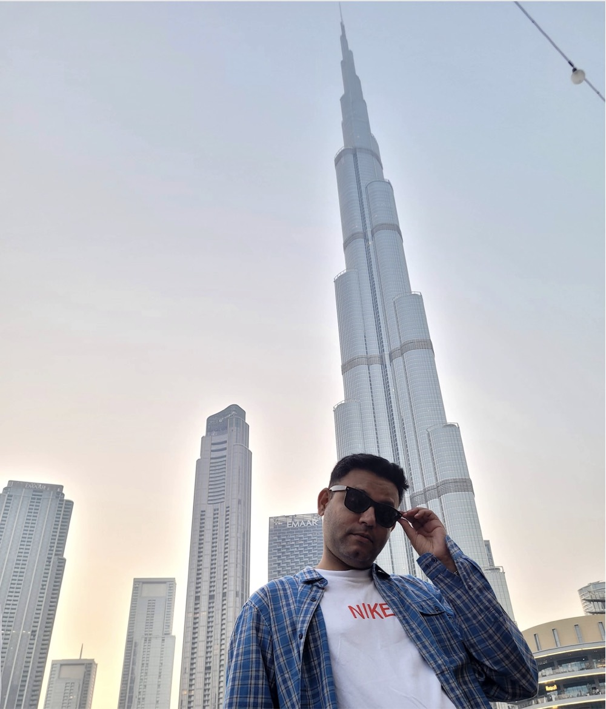
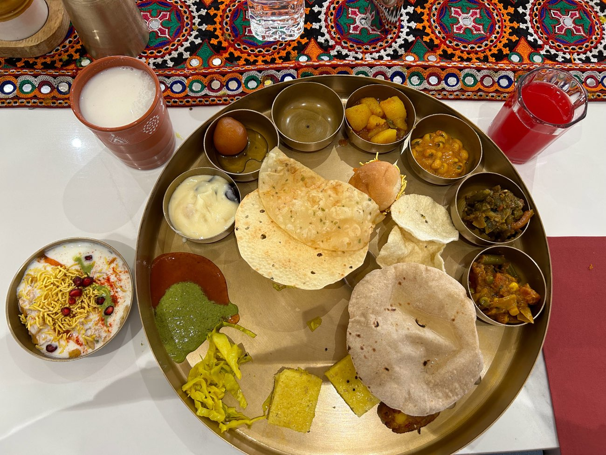
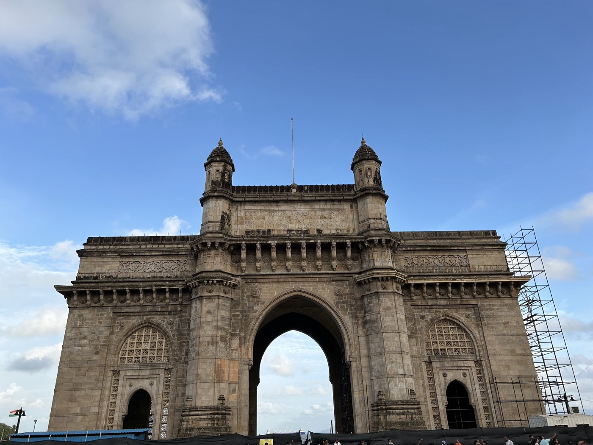
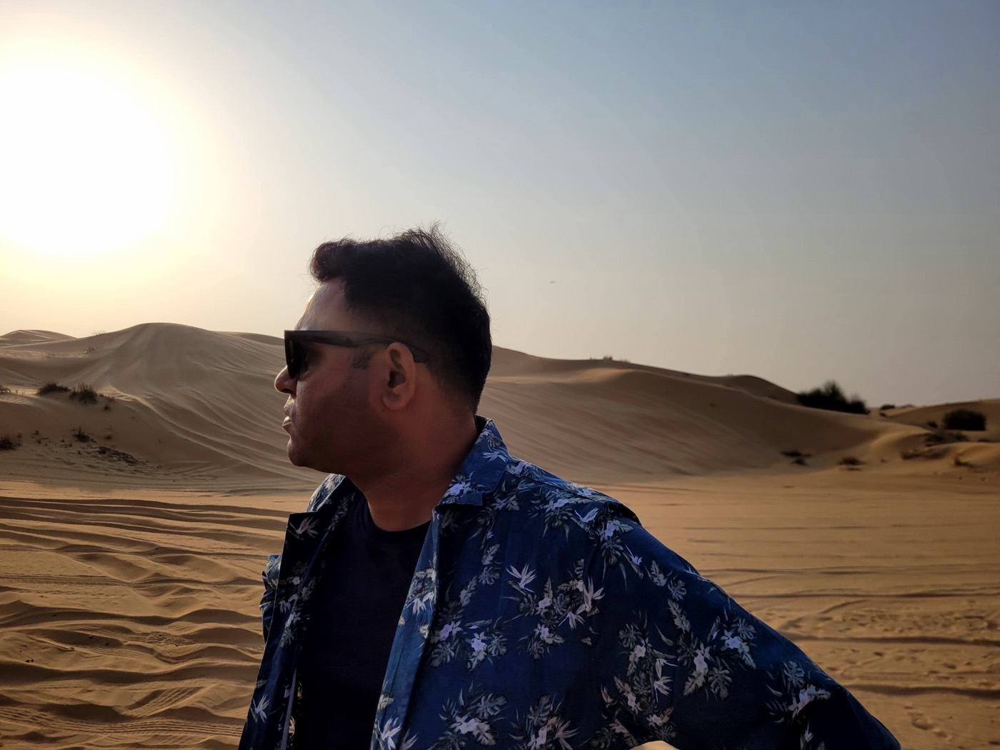

Engineer by day, collector of moments the rest.
I'm Kunal. I've spent 12 years building payment systems across the UAE, US and India. This corner of the internet is for everything else: skylines, window seats, thalis and the books on my shelf.
this page changes colour with your clock
Postcards
Lately, off the roadmap.





By day
I build the rails money moves on.
Payments, remittance, cards and digital banking - from QA and release engineering to owning the product. Twelve years, five teams, three countries.
See the work →Say hello.
Travel tips, book recommendations, or a payments problem - all welcome.